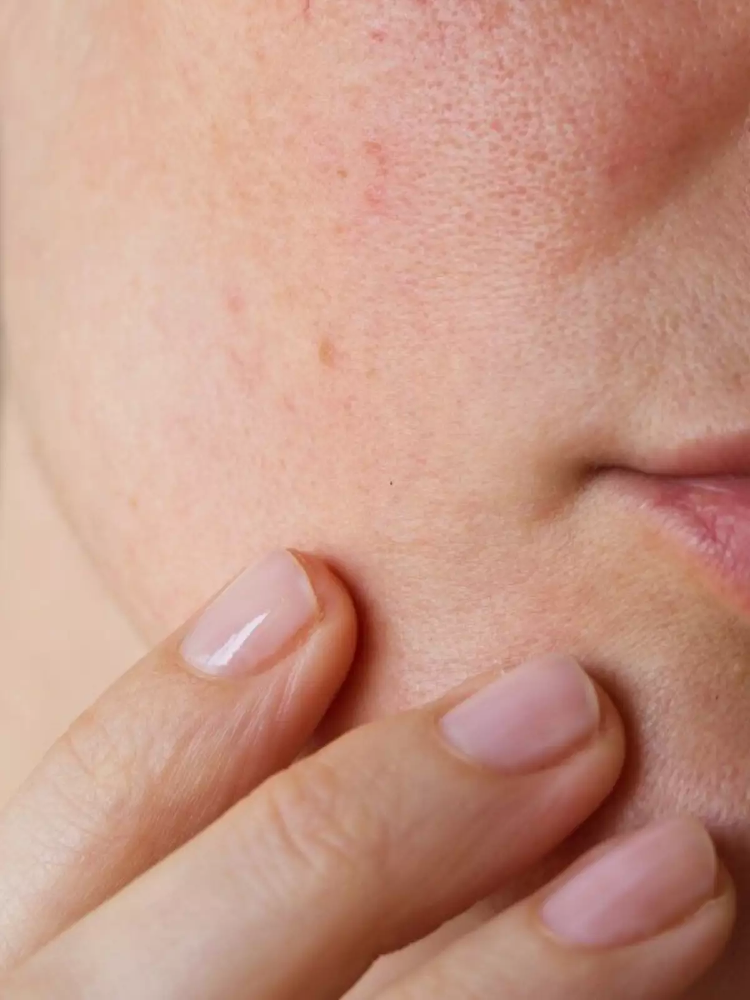
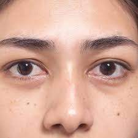
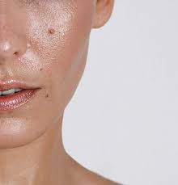

Glow Up
Descubra truques, inspirações e tendências para brilhar
Maquiagens para cada tipo de pele
Como identificar o seu tipo de pele?
Para identificar o tipo de pele, é preciso observar a aparência e como ela se comporta ao longo do dia, principalmente após a limpeza facial. Os tipos de pele mais comuns são: normal, oleosa, seca, mista e sensível. Cada tipo possui características distintas que podem ser identificadas através de observação e, em alguns casos, com a ajuda de um profissional.
Tipos de Pele




Passo a Passo da Maquiagem por Tipo de Pele
| Etapa | Pele Normal | Pele Seca | Pele Mista | Pele Oleosa |
|---|---|---|---|---|
| 1. Limpeza | Limpeza suave com sabonete neutro. | Limpeza hidratante, sem ressecar. | Limpeza equilibrada, sem remover oleosidade natural. | Limpeza profunda, controle de oleosidade. |
| 2. Hidratação | Creme leve, suficiente para manter a pele hidratada. | Hidratação intensa antes da maquiagem. | Hidratar áreas secas, evitar excesso na zona T. | Loção oil-free, hidratante leve. |
| 3. Primer | Primer iluminador suave. | Primer hidratante. | Primer equilibrado (controle de oleosidade na zona T). | Primer matificante. |
| 4. Base | Base líquida leve ou mousse. | Base cremosa hidratante. | Base líquida equilibrada ou matte nas áreas oleosas. | Base matte ou oil-free. |
| 5. Corretivo | Corretivo líquido ou em creme leve. | Corretivo cremoso iluminador. | Corretivo em áreas secas ou olheiras. | Corretivo líquido sem brilho. |
| 6. Pó | Pó translúcido leve. | Pó solto suave. | Usar pó apenas na zona T. | Pó solto ou compacto para controlar oleosidade. |
| 7. Blush / Iluminador | Blush em pó, iluminador leve. | Blush cremoso, iluminador líquido. | Blush em pó, iluminador suave. | Blush em pó, iluminador mínimo. |
| 8. Finalização | Fixador leve ou spray iluminador. | Bruma hidratante fixadora. | Spray fixador leve. | Fixador oil-free, controle de brilho. |
Video - Automaquiagem
Video de maquiagem para inciciantes